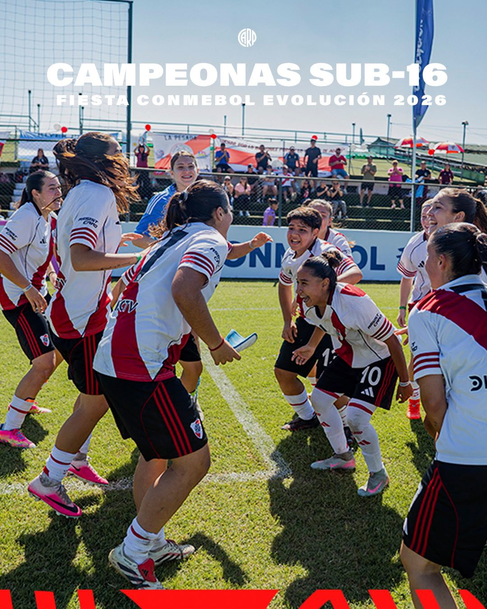

River goleó 4-0 a Inter Stars Rush de Bolivia en la final disputada en Paraguay y se convirtió en el primer club argentino en ganar el torneo continental.

La Sub-16 femenina de River Plate se consagró campeona de la Fiesta Conmebol Evolución 2026 tras golear 4-0 a Inter Stars Rush de Bolivia en la final, disputada en la Cancha Conmebol de Luque, Paraguay.
Con esta consagración, River se convirtió en el primer club argentino en ganar este prestigioso torneo continental, que reunió a más de 50.000 juveniles de las categorías Sub-13 masculina y Sub-14 y Sub-16 femeninas de diez países sudamericanos. Las Millonarias habían llegado a la final tras eliminar por penales a Independiente del Valle de Ecuador en semifinales.
Como premio por el título, el plantel viajará en diciembre a Madrid para participar del Encuentro Internacional de la Fiesta Conmebol Evolución, donde enfrentará a academias juveniles destacadas de Europa. River también se quedó con el título en Sub-13 masculina, coronando una edición a puro festejo para el club de Núñez.
Seguir leyendo
Seguinos en redes